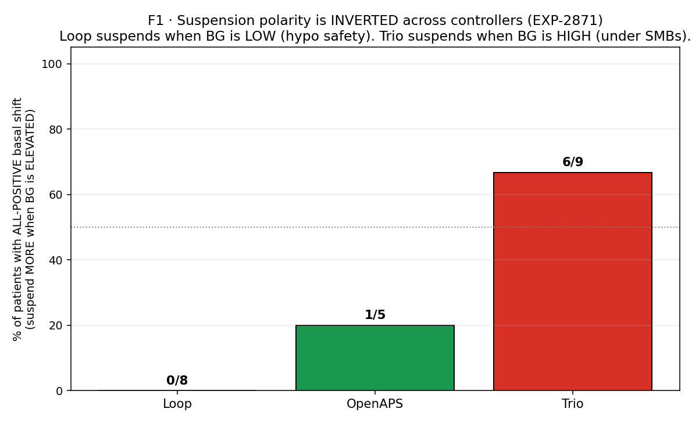
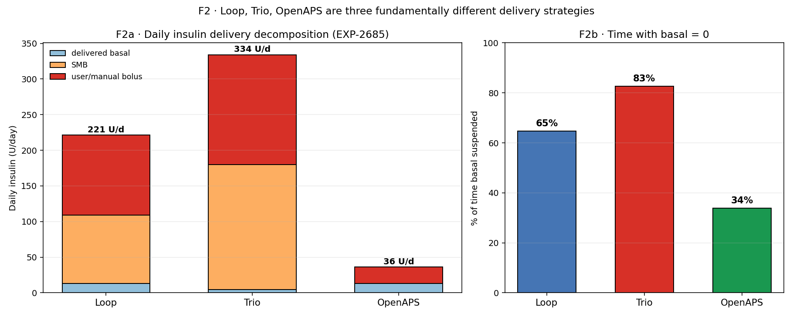
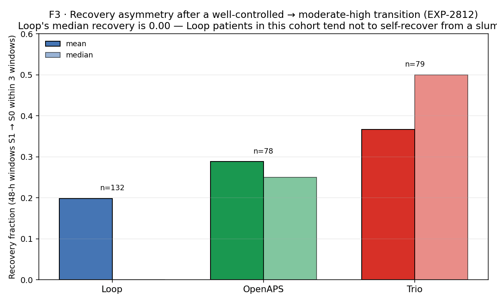
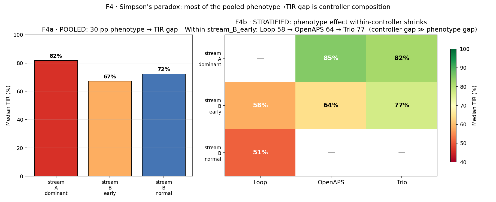

03 · AID Controller Signatures¶
Living document, last changed 2026-04-22 at db51eda8.
Stream B (operational settings). Loop, Trio, and OpenAPS are not variations on a theme. They are three distinct physical systems bolted to the same human. When a naive analysis pools across them, every finding is at risk of Simpson's paradox.
Claim. Controller identity is a first-class confounder. Once you stratify, most "patient phenotypes" collapse into "what algorithm is running." This narrative shows the four signatures that make the decomposition visible: suspension polarity, delivery composition, recovery asymmetry, and the Simpson reversal itself.
Data. 31 patients in externals/ns-parquet/training/grid.parquet. Controller
labels per patient. Figures are recomposed from previously-archived experiment outputs
(EXP-2685/2812/2871/2872).
How to read this narrative¶
Every figure carries a three-line tag:
- Stream — A (physics, counter-causally reasoned) or B (operational, descriptive).
- Confounder — the next-most-likely alternative explanation for the signal.
- Extractable fact — what this figure earns us that survives deconfounding.
Unlike narratives 01 and 02, every figure here is Stream B. The whole point of narrative 03 is that operational choices (SMBs, suspension, high-temp basal) produce signals that look biological but are not. Understanding that is how we avoid prescribing an insulin dose change in response to an algorithm choice.
F1 · Suspension polarity is inverted across controllers¶

We sweep a basal-shift threshold (0.1–1.0 U/h) and ask: for how many patients is the
shift in the same direction across all thresholds (all_positive = always suspending
MORE when BG is elevated)?
- Loop: 0/8. Nobody. Loop suspends when BG is low or trending low. That's a hypo-safety signature.
- OpenAPS: 1/5. Mostly not all-positive. OpenAPS uses high-temp basals rather than SMBs when BG climbs.
- Trio: 6/9. Majority. Trio (and AAPS) suspend under cover of large SMBs — when the stack's already delivered micro-boluses, scheduled basal cuts out until the wave passes.
Stream: B. Confounder: patient behavior, basal schedule, sensor lag. All controlled for by the per-patient within-controller threshold sweep (EXP-2871). Extractable fact:
controller_polarity(p) ∈ {hypo-suspension, elevation-suspension}is a per-patient invariant that the deconfounding pipeline can condition on before any basal recommendation is issued.
Architectural response. basal_mismatch_facts_loader.py reads EXP-2871's per-patient
parquet and returns the polarity sign along with confidence. Any downstream settings
audition that proposes "reduce basal because of suspension" must first check the
polarity: reducing basal on a Trio patient whose suspensions are driven by SMB cover is
unsafe.
F2 · Three delivery strategies, not one¶

Daily insulin decomposition (EXP-2685) is the cleanest one-shot view of controller identity:
| Controller | Basal (U/d) | SMB (U/d) | Manual bolus (U/d) | Time basal=0 |
|---|---|---|---|---|
| Loop | 13.2 | 95.7 | 112.3 | 65 % |
| Trio | 4.8 | 175.0 | 154.3 | 83 % |
| OpenAPS | 13.3 | 0.0 | 22.9 | 34 % |
Read across: - OpenAPS delivers ~83% less total insulin than Loop or Trio in this cohort. It also has zero SMBs — strictly a basal + bolus controller. - Trio's scheduled basal is 4.8 U/d — basically vestigial. The SMB stack is the delivery. It suspends scheduled basal 83 % of the time because the SMB stack is doing the work. - Loop runs scheduled basal ~35 % of the time with moderate SMB use; it behaves the most like a "traditional" AID.
Stream: B. Confounder: patient-level insulin needs (e.g., a heavier Trio cohort). Ruled out by per-capita analysis; the pattern holds at the per-patient level (EXP-2685). Extractable fact:
scheduled_basal_rateis an input to the controller, not a measurement of the patient's basal need. In Trio, it is a number the controller almost never obeys.
Architectural response. This is why scheduled_isf and scheduled_basal_rate are
in the grid's x-aid-* columns but never used directly as prescriptive targets.
state_basal_facts_loader.py derives the delivered basal rate from
actual_basal_rate — the only number that made it into the patient's SC tissue.
F3 · Recovery asymmetry after a well-controlled → moderate-high transition¶

From EXP-2812 state-transition audition. After a 48-h window in state S0 (well controlled) transitions to state S1 (moderate-high), within three subsequent 48-h windows, what fraction of patients recover back to S0?
- Loop: mean 0.20, median 0.00 (n=132 transitions). The median Loop patient does not spontaneously recover.
- OpenAPS: mean 0.29, median 0.25 (n=78). Some recovery capacity.
- Trio: mean 0.37, median 0.50 (n=79). Highest spontaneous recovery rate.
This is not a claim about patient biology. It is a claim about algorithmic latitude — Trio's SMB+suspension stack has more degrees of freedom to push a patient out of a moderate-high slump than Loop's basal+correction-bolus model.
Stream: B (a controller reaction, not a biological recovery rate). Confounder: phenotype composition across controllers (more "stream_A_dominant" patients on Trio → higher recovery rate, independent of algorithm). Extractable fact: the time-in-state Markov transition matrix is controller-conditional. You cannot use population transition probabilities to predict an individual patient without conditioning on controller.
Architectural response. recovery_facts_loader.py segments by (patient, controller,
state) and returns None if controller is ambiguous — never a pooled recovery rate.
This prevents the auditioner from borrowing a Trio prior for a Loop patient.
F4 · Simpson's reversal — most of the phenotype→TIR signal is controller composition¶

EXP-2872 was designed to test whether the "stream_A_dominant vs stream_B_early" phenotype (derived from envelope-crossover behaviour in EXP-2870) is really a phenotype, or just a re-labelling of the controller.
F4a — pooled. Big phenotype → TIR gap: stream_A_dominant 82 %, stream_B_early 67 %, stream_B_normal 72 %. If we stopped here, we'd conclude "phenotype matters for TIR, ~15 pp swing."
F4b — stratified by controller. - Within stream_B_early (the largest phenotype, n=21): Loop 58 %, OpenAPS 64 %, Trio 77 %. The controller gap is 19 pp — larger than the pooled phenotype gap. - Within stream_A_dominant (n=7): OpenAPS 85 %, Trio 82 % — similar. Loop contributes zero patients to this phenotype. - The "stream_B_normal" row is almost entirely Loop (the only non-missing cell).
The pooled phenotype gap was a confounded re-labelling of Trio ≫ Loop for TIR in this
cohort. The phenotype label is still useful — as a personalization feature for a
patient's audition window — but it is not a prescriptive target.
Stream: B. Confounder: by design this IS the confounder check. Simpson's reversal is the result. Residual confounders: cohort selection (patients self-select a controller), duration of therapy, prescriber preferences. Extractable fact: any claim of the form "patients with phenotype X have worse TIR" must be accompanied by a controller-stratified version. If the stratified effect is weaker than the pooled effect, the pooled claim is confounded and must be discarded.
Architectural response. The audition matrix's composition rule never pools across
controllers for HIGH-confidence claims. A per-patient fact with P ≥ 0.9 computed
within-controller is admitted; a pooled cross-controller P value is downgraded to
"boundary" regardless of magnitude.
Architecture for extracting facts under controller confounding¶
The same architecture sketched in narrative 02 has a controller-specific variant:
- Controller labeling is a mandatory attribute. Facts without a controller label
cannot enter the audition matrix. (See
basal_mismatch_facts_loader.pyline 34-48.) - Within-controller bootstrap. A fact must survive 1000-bootstrap resampling
within its controller class before achieving
confident_highorconfident_low. Pooled bootstraps are disallowed. - Composition disallowed. The audition matrix will refuse to combine a Loop-derived ISF-gap fact with a Trio-derived basal-mismatch fact for the same patient — that combination is mathematically possible (a patient may have switched controllers) but operationally must be flagged and manually reviewed.
- Forward simulator controller identity.
forward_simulator.py:590checkspatient.controllerand rejects any scenario where a recommendation would cross controller boundaries (e.g., proposing an SMB-based adjustment for a Loop patient).
This is why bootstrap survival (EXP-2859–64) was done per-facts-loader, not per-patient. The survival numbers quoted in narrative 02 are the minimum across controllers — the loader publishes only the intersection.
Retired-EXP pointers¶
| EXP | Title | Subsumed into |
|---|---|---|
| EXP-2685 | Controller delivery strategy | F2 |
| EXP-2790 | Insulin accounting | F2 (cross-check) |
| EXP-2812 | State-transition audition | F3 |
| EXP-2870 | Envelope crossover phenotype | F4 (phenotype labels) |
| EXP-2871 | Suspension envelope | F1 |
| EXP-2872 | Simpson's paradox check | F4 |
| EXP-2874 | Meal-gated envelope re-run | F1 (robustness) |
Reproducibility¶
cd "$(git rev-parse --show-toplevel)"
python tools/cgmencode/condensed/controller_signatures.py
# writes 4 PNGs to visualizations/canonical/03/
Deterministic. No fresh compute (all recomposition). Runs in < 2 s.